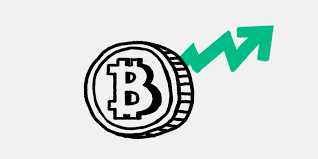

Quick Overview
2011/07/01 - 2011/09/30
From July 1, 2011, to September 30, 2011, Bitcoin experienced a significant period of growth and mainstream adoption, as well as a time of price volatility that would set the stage for the future of the cryptocurrency. This period saw the emergence of Bitcoin as a potential disruptive technology and the beginning of a new era of digital currencies.
In July 2011, Bitcoin was trading at around $15, which was already a significant increase from its early days when it was virtually worthless. At this time, Bitcoin was still primarily used by a small community of tech enthusiasts. However, as more people became interested in the idea of a decentralized digital currency, its popularity began to grow.
By August 2011, Bitcoin had gained even more mainstream attention, thanks to an article in Forbes that highlighted its potential as a disruptive technology. The article helped to raise awareness about Bitcoin and its potential benefits, including its low transaction fees, speed, and security.
As interest in Bitcoin grew, the demand for the cryptocurrency began to increase. This led to a dramatic spike in its value, with the price of Bitcoin reaching $31 by mid-August. However, this was followed by a sharp correction, and by September 2011, the price had fallen back to around $5.
Despite the challenges, Bitcoin continued to gain momentum during this period, with several new Bitcoin clients being released, including Bitcoin version 0.3.23 and Bitcoin version 0.3.24. These versions contained improvements and bug fixes that improved the stability and performance of the Bitcoin network.
In conclusion, the period from July 1, 2011, to September 30, 2011, was a pivotal time in the history of Bitcoin. It was a time of significant growth and mainstream adoption, as well as a time of price volatility that would set the stage for the future of the cryptocurrency.
